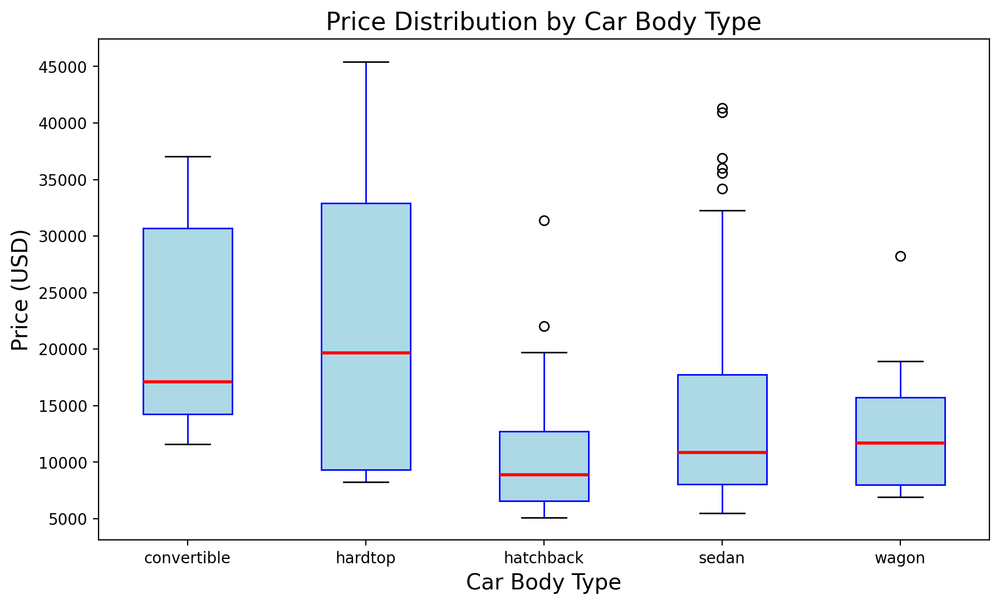
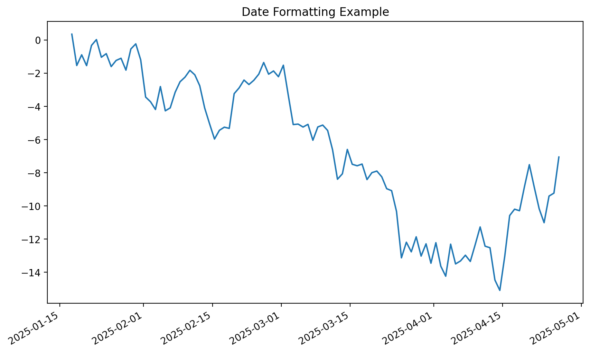

import matplotlib.pyplot as plt
import pandas as pd
import numpy as np
%config InlineBackend.figure_format = 'retina'Introduction To Matplotlib
Data and Library Import
url = "https://raw.githubusercontent.com/YashBachwana/ES114-2025--Car-Price-Dataset/refs/heads/main/Car%20Price/CarPrice_Assignment.csv"
Data = pd.read_csv(url,index_col = 0)Data.head()| symboling | CarName | fueltype | aspiration | doornumber | carbody | drivewheel | enginelocation | wheelbase | carlength | ... | enginesize | fuelsystem | boreratio | stroke | compressionratio | horsepower | peakrpm | citympg | highwaympg | price | |
|---|---|---|---|---|---|---|---|---|---|---|---|---|---|---|---|---|---|---|---|---|---|
| car_ID | |||||||||||||||||||||
| 1 | 3 | alfa-romero giulia | gas | std | two | convertible | rwd | front | 88.6 | 168.8 | ... | 130 | mpfi | 3.47 | 2.68 | 9.0 | 111 | 5000 | 21 | 27 | 13495.0 |
| 2 | 3 | alfa-romero stelvio | gas | std | two | convertible | rwd | front | 88.6 | 168.8 | ... | 130 | mpfi | 3.47 | 2.68 | 9.0 | 111 | 5000 | 21 | 27 | 16500.0 |
| 3 | 1 | alfa-romero Quadrifoglio | gas | std | two | hatchback | rwd | front | 94.5 | 171.2 | ... | 152 | mpfi | 2.68 | 3.47 | 9.0 | 154 | 5000 | 19 | 26 | 16500.0 |
| 4 | 2 | audi 100 ls | gas | std | four | sedan | fwd | front | 99.8 | 176.6 | ... | 109 | mpfi | 3.19 | 3.40 | 10.0 | 102 | 5500 | 24 | 30 | 13950.0 |
| 5 | 2 | audi 100ls | gas | std | four | sedan | 4wd | front | 99.4 | 176.6 | ... | 136 | mpfi | 3.19 | 3.40 | 8.0 | 115 | 5500 | 18 | 22 | 17450.0 |
5 rows × 25 columns
A Simple Line Plot
A line plot is the most basic type of plot in Matplotlib. It is used to display information as a series of data points connected by straight lines.
Sin Wave
import numpy as np
import matplotlib.pyplot as plt
# Create a figure and axis
fig, ax = plt.subplots()
x = np.linspace(0, 10, 100)
y = np.sin(x)
# Plot y = sin(x) on the ax object
ax.plot(x, y)
Adding Label, Title and Grid
# Create a figure and axis
fig, ax = plt.subplots()
x = np.linspace(0, 10, 100)
y = np.sin(x)
# Plot y = sin(x) on the ax object
ax.plot(x, y)
# Add title and labels
ax.set_title("Sine Wave: Basic Plot")
ax.set_xlabel("Time (in seconds)")
ax.set_ylabel("Amplitude")
# Add grid for better visibility of the plot
ax.grid(True)
sine_series = pd.Series(y, index=x, name="Amplitude")
sine_series0.00000 0.000000
0.10101 0.100838
0.20202 0.200649
0.30303 0.298414
0.40404 0.393137
...
9.59596 -0.170347
9.69697 -0.268843
9.79798 -0.364599
9.89899 -0.456637
10.00000 -0.544021
Name: Amplitude, Length: 100, dtype: float64# Plot the sine wave using pandas Series
ax = sine_series.plot(
title="Sine Wave: Basic Plot",
xlabel="Time (in seconds)",
ylabel="Amplitude",
grid=True
)Organizing The Plots
Multiple plots on the same figure
# Create a figure and axis
fig, ax = plt.subplots()
x = np.linspace(0, 10, 100)
y1 = np.sin(x)
y2 = np.cos(x)
# Plot y = sin(x) on the ax object with label
ax.plot(x, y1, label="sin(x)", color='b')
# Plot y = cos(x) on the ax object with label
ax.plot(x, y2, label="cos(x)",color='r')
# Add title and labels
ax.set_title("Sine and Cosine Waves")
ax.set_xlabel("Time (in seconds)")
ax.set_ylabel("Amplitude")
# Add legend to distinguish the curves
ax.legend(loc="upper right", title="Functions")
# Add grid for better visibility
ax.grid(True)
# Display the plot
plt.show()Other ways to specify colors
# Create a figure and axis
fig, ax = plt.subplots()
x = np.linspace(0, 10, 100)
y1 = np.sin(x)
y2 = np.cos(x)
# Plot y = sin(x) on the ax object with label
ax.plot(x, y1, label="sin(x)", color='C0')
# Plot y = cos(x) on the ax object with label
ax.plot(x, y2, label="cos(x)",color='C1')
# Add title and labels
ax.set_title("Sine and Cosine Waves")
ax.set_xlabel("Time (in seconds)")
ax.set_ylabel("Amplitude")
# Add legend to distinguish the curves
ax.legend(loc="upper right")
# Add grid for better visibility
ax.grid(True)Splitting a figure
import numpy as np
import matplotlib.pyplot as plt
x = np.linspace(0, 10, 100)
# Create a figure with 4 subplots arranged in a 2x2 grid
fig, axes = plt.subplots(2, 2, figsize=(10, 6)) # 2 rows, 2 columns
# First subplot: sin(x)
axes[0, 0].plot(x, np.sin(x))
axes[0, 0].set_title("sin(x)")
# Second subplot: cos(x)
axes[0, 1].plot(x, np.cos(x), color='red')
axes[0, 1].set_title("cos(x)")
# Third subplot: tan(x)
axes[1, 0].plot(x, np.tan(x), color='green')
axes[1, 0].set_title("tan(x)")
# Fourth subplot: exp(-x)
axes[1, 1].plot(x, np.exp(-x), color='purple')
axes[1, 1].set_title("exp(-x)")
fig.tight_layout()# Above same plot using pandas
# Create a pandas DataFrame with the sine, cosine, and tangent values
df = pd.DataFrame({
"sin(x)": np.sin(x),
"cos(x)": np.cos(x),
"tan(x)": np.tan(x),
"exp(-x)": np.exp(-x)
}, index=x)
df| sin(x) | cos(x) | tan(x) | exp(-x) | |
|---|---|---|---|---|
| 0.00000 | 0.000000 | 1.000000 | 0.000000 | 1.000000 |
| 0.10101 | 0.100838 | 0.994903 | 0.101355 | 0.903924 |
| 0.20202 | 0.200649 | 0.979663 | 0.204814 | 0.817078 |
| 0.30303 | 0.298414 | 0.954437 | 0.312660 | 0.738577 |
| 0.40404 | 0.393137 | 0.919480 | 0.427564 | 0.667617 |
| ... | ... | ... | ... | ... |
| 9.59596 | -0.170347 | -0.985384 | 0.172874 | 0.000068 |
| 9.69697 | -0.268843 | -0.963184 | 0.279119 | 0.000061 |
| 9.79798 | -0.364599 | -0.931165 | 0.391551 | 0.000056 |
| 9.89899 | -0.456637 | -0.889653 | 0.513276 | 0.000050 |
| 10.00000 | -0.544021 | -0.839072 | 0.648361 | 0.000045 |
100 rows × 4 columns
# Create a figure with 4 subplots arranged in a 2x2 grid
fig, axes = plt.subplots(2, 2, figsize=(10, 6)) # 2 rows, 2 columns
# Plot each column of the DataFrame on a separate subplot
df["sin(x)"].plot(ax=axes[0, 0], color='blue', title="sin(x)")
df["cos(x)"].plot(ax=axes[0, 1], color='red', title="cos(x)")
df["tan(x)"].plot(ax=axes[1, 0], color='green', title="tan(x)")
df["exp(-x)"].plot(ax=axes[1, 1], color='purple', title="exp(-x)")
fig.tight_layout()# Above same plot using pandas
# Create a pandas DataFrame with the sine, cosine, and tangent values
df = pd.DataFrame({
"sin(x)": np.sin(x),
"cos(x)": np.cos(x),
"tan(x)": np.tan(x),
"exp(-x)": np.exp(-x)
}, index=x)
fig, axes = plt.subplots(2, 2, figsize=(10, 6))
df.plot(subplots=True, ax=axes, figsize=(10, 6),
title=["sin(x)", "cos(x)", "tan(x)", "exp(-x)"]
,legend=False)
fig.tight_layout()fig, axes = plt.subplots(2, 2, figsize=(10, 6))
df.plot(subplots=True, ax=axes, figsize=(10, 6),
title=["sin(x)", "cos(x)", "tan(x)", "exp(-x)"]
,legend=False)
# Add super title to the figure
fig.suptitle("Trigonometric Functions and Exponential Decay", fontsize=20)
fig.tight_layout()Tweaking
import numpy as np
import matplotlib.pyplot as plt
# Daily temperature variations (in °C) over a week
days = ["Monday", "Tuesday", "Wednesday", "Thursday", "Friday", "Saturday", "Sunday"]
city_a = [22, 24, 23, 25, 26, 27, 28] # City A temperatures
city_b = [18, 19, 20, 21, 22, 21, 20] # City B temperatures
city_c = [30, 31, 32, 33, 34, 35, 36] # City C temperatures
# Create a figure and axis
fig, ax = plt.subplots(figsize=(10, 6))
# Plot trends with customizations
ax.plot(days, city_a, color='blue', linestyle='-', linewidth=2, marker='o', label='City A')
ax.plot(days, city_b, color='green', linestyle='--', linewidth=2, marker='s', label='City B')
ax.plot(days, city_c, color='red', linestyle='-.', linewidth=2, marker='^', label='City C')
# Add title and labels
ax.set_title("Temperature Trends Over a Week", fontsize=16)
ax.set_xlabel("Day of the Week", fontsize=14)
ax.set_ylabel("Temperature (°C)", fontsize=14)
# Customize ticks
ax.set_xticks(days) # Use day names for x-axis
ax.tick_params(axis='both', which='major', labelsize=12)
# Add legend
ax.legend(fontsize=12, title="Cities")
# Add grid for better readability
ax.grid(True, linestyle='--', alpha=0.6)
# Display the plot
plt.tight_layout()# Create a pandas DataFrame
data = pd.DataFrame({
"Day": days,
"City A": city_a,
"City B": city_b,
"City C": city_c
})
# Define a list of markers
markers = ["o", "s", "^"]
# Plot in one go
ax = data.plot(
x="Day",
y=["City A", "City B", "City C"],
figsize=(10, 6),
linestyle="-",
linewidth=2,
title="Temperature Trends Over a Week",
xlabel="Day of the Week",
ylabel="Temperature (°C)"
)
# Apply markers
for line, marker in zip(ax.lines, markers):
line.set_marker(marker)
# Customize legend
ax.legend(fontsize=12, title="Cities")
# Customize grid and ticks
ax.grid(True, linestyle="--", alpha=0.6)
ax.tick_params(axis="both", which="major", labelsize=12)Limits and Ticks
import matplotlib.pyplot as plt
import numpy as np
# Hypothetical temperature data (in °C) for 24 hours
hours = np.arange(24) # Hours from 0 to 23
temperature = [12, 11, 10, 9, 9, 8, 8, 10, 14, 18, 22, 25, 27, 29, 28, 26, 23, 21, 18, 16, 15, 14, 13, 12]
# Create a figure and axis
fig, ax = plt.subplots(figsize=(10, 6))
# Plot the temperature data
ax.plot(hours, temperature, marker='o', color='orange', label='Temperature (°C)')import matplotlib.pyplot as plt
import numpy as np
# Hypothetical temperature data (in °C) for 24 hours
hours = np.arange(24) # Hours from 0 to 23
temperature = [12, 11, 10, 9, 9, 8, 8, 10, 14, 18, 22, 25, 27, 29, 28, 26, 23, 21, 18, 16, 15, 14, 13, 12]
# Create a figure and axis
fig, ax = plt.subplots(figsize=(10, 6))
# Plot the temperature data
ax.plot(hours, temperature, marker='o', color='orange', label='Temperature (°C)')
# Add title and labels
ax.set_title("Hourly Temperature Variations", fontsize=16)
ax.set_xlabel("Hour of the Day", fontsize=14)
ax.set_ylabel("Temperature (°C)", fontsize=14)
# Modify axis limits to focus on the specific hours and temperature range
ax.set_xlim(6, 18) # Focus on hours 6 AM to 6 PM
ax.set_ylim(15, 30) # Focus on the relevant temperature range
# Customize ticks
ax.set_xticks(range(6, 19, 2)) # Show ticks every 2 hours in the focused range
ax.set_xticklabels([f"{h} AM" if h < 12 else f"{h-12} PM" for h in range(6, 19, 2)]) # Format as AM/PM
ax.set_yticks(range(15, 31, 5)) # Show y-axis ticks every 5°C
# Add gridlines for better visibility
ax.grid(which='both', axis='both', linestyle='--', alpha=0.6)
# Add legend
ax.legend(fontsize=12, loc='upper left')
# Display the plot
plt.tight_layout()
plt.show()Saving The Plots
# Save the plot as a PNG file
fig.savefig("temperature_variations.png", dpi=300, bbox_inches='tight')
# Save the plot as a PDF file
fig.savefig("temperature_variations.pdf", dpi=300, bbox_inches='tight')
# Save the plot as an SVG file
fig.savefig("temperature_variations.svg", dpi=300, bbox_inches='tight')Choose Your Plot
Bar Plot
Used for categorical or discrete data to compare counts or summarized values.
# Count occurrences of each fuel type
fueltype_counts = Data['carbody'].value_counts()
fueltype_countscarbody
sedan 96
hatchback 70
wagon 25
hardtop 8
convertible 6
Name: count, dtype: int64
# Parameters for bar color and width
bar_color = ['skyblue'] # Example color list, you can change it to any color you prefer
bar_width = 0.6
fig, ax = plt.subplots(figsize=(8, 6))
ax.bar(fueltype_counts.index, fueltype_counts.values, color=bar_color, width=bar_width)
ax.set_title('Distribution of Car Body', fontsize=16)
#ax.set_xlabel('Car Body', fontsize=14)
#ax.set_ylabel('Count', fontsize=14)
#ax.set_xticks(range(len(fueltype_counts.index)))
#ax.set_xticklabels(fueltype_counts.index, fontsize=12)
plt.show()# In pandas
fueltype_counts.plot(kind='bar', color='skyblue',
figsize=(8, 6),
xlabel='Car Body', ylabel='Count'
, title='Distribution of Car Body')Annotations
# Count occurrences of each fuel type
fueltype_counts = Data['carbody'].value_counts()
# Parameters for bar color and width
bar_color = ['skyblue'] # Example color list, you can change it to any color you prefer
bar_width = 0.6
fig, ax = plt.subplots(figsize=(8, 6))
bars = ax.bar(fueltype_counts.index, fueltype_counts.values, color=bar_color, width=bar_width)
# Add annotations on top of each bar
for bar in bars:
yval = bar.get_height()
ax.text(bar.get_x() + bar.get_width() / 2, yval + 1, # Position the text above the bar
round(yval, 2), # Display the count value (rounded to 2 decimal places)
ha='center', va='bottom', fontsize=12) # Align text at the center of the bar and just above it
ax.set_title('Distribution of Car Body', fontsize=16)
ax.set_xlabel('Car Body', fontsize=14)
ax.set_ylabel('Count', fontsize=14)
ax.set_xticks(range(len(fueltype_counts.index)))
ax.set_xticklabels(fueltype_counts.index, fontsize=12)
plt.show()# Plot the bar chart
ax = fueltype_counts.plot(
kind='bar',
color='skyblue',
figsize=(8, 6),
rot=0,
xlabel='Car Body',
ylabel='Count',
title='Distribution of Car Body'
)
# Annotate the bars
for bar in ax.patches:
# Get the height of the bar (count value)
bar_height = bar.get_height()
# Annotate the bar with its value
ax.annotate(
f'{bar_height}', # Annotation text
xy=(bar.get_x() + bar.get_width() / 2, bar_height), # Position above bar
xytext=(0, 5), # Offset for the annotation
textcoords='offset points',
ha='center',
fontsize=10
)
# Adjust layout and show the plot
plt.tight_layout()Scatterplot
Used for bivariate data to examine relationships or correlations between two continuous variables.
x = Data['horsepower']
y = Data['price']
# Create the scatter plot
fig, ax = plt.subplots(figsize=(8, 6))
ax.scatter(x, y, color='blue', alpha=0.7)
ax.set_title('Horsepower vs. Car Price', fontsize=16)
ax.set_xlabel('Horsepower', fontsize=14)
ax.set_ylabel('Price ($)', fontsize=14)
ax.grid(True)Data| symboling | CarName | fueltype | aspiration | doornumber | carbody | drivewheel | enginelocation | wheelbase | carlength | ... | enginesize | fuelsystem | boreratio | stroke | compressionratio | horsepower | peakrpm | citympg | highwaympg | price | |
|---|---|---|---|---|---|---|---|---|---|---|---|---|---|---|---|---|---|---|---|---|---|
| car_ID | |||||||||||||||||||||
| 1 | 3 | alfa-romero giulia | gas | std | two | convertible | rwd | front | 88.6 | 168.8 | ... | 130 | mpfi | 3.47 | 2.68 | 9.0 | 111 | 5000 | 21 | 27 | 13495.0 |
| 2 | 3 | alfa-romero stelvio | gas | std | two | convertible | rwd | front | 88.6 | 168.8 | ... | 130 | mpfi | 3.47 | 2.68 | 9.0 | 111 | 5000 | 21 | 27 | 16500.0 |
| 3 | 1 | alfa-romero Quadrifoglio | gas | std | two | hatchback | rwd | front | 94.5 | 171.2 | ... | 152 | mpfi | 2.68 | 3.47 | 9.0 | 154 | 5000 | 19 | 26 | 16500.0 |
| 4 | 2 | audi 100 ls | gas | std | four | sedan | fwd | front | 99.8 | 176.6 | ... | 109 | mpfi | 3.19 | 3.40 | 10.0 | 102 | 5500 | 24 | 30 | 13950.0 |
| 5 | 2 | audi 100ls | gas | std | four | sedan | 4wd | front | 99.4 | 176.6 | ... | 136 | mpfi | 3.19 | 3.40 | 8.0 | 115 | 5500 | 18 | 22 | 17450.0 |
| ... | ... | ... | ... | ... | ... | ... | ... | ... | ... | ... | ... | ... | ... | ... | ... | ... | ... | ... | ... | ... | ... |
| 201 | -1 | volvo 145e (sw) | gas | std | four | sedan | rwd | front | 109.1 | 188.8 | ... | 141 | mpfi | 3.78 | 3.15 | 9.5 | 114 | 5400 | 23 | 28 | 16845.0 |
| 202 | -1 | volvo 144ea | gas | turbo | four | sedan | rwd | front | 109.1 | 188.8 | ... | 141 | mpfi | 3.78 | 3.15 | 8.7 | 160 | 5300 | 19 | 25 | 19045.0 |
| 203 | -1 | volvo 244dl | gas | std | four | sedan | rwd | front | 109.1 | 188.8 | ... | 173 | mpfi | 3.58 | 2.87 | 8.8 | 134 | 5500 | 18 | 23 | 21485.0 |
| 204 | -1 | volvo 246 | diesel | turbo | four | sedan | rwd | front | 109.1 | 188.8 | ... | 145 | idi | 3.01 | 3.40 | 23.0 | 106 | 4800 | 26 | 27 | 22470.0 |
| 205 | -1 | volvo 264gl | gas | turbo | four | sedan | rwd | front | 109.1 | 188.8 | ... | 141 | mpfi | 3.78 | 3.15 | 9.5 | 114 | 5400 | 19 | 25 | 22625.0 |
205 rows × 25 columns
Data.plot.scatter(x='horsepower', y='price', color='blue', alpha=0.7, figsize=(8, 6),
title='Horsepower vs. Car Price', xlabel='Horsepower', ylabel='Price ($)', grid=True)Pie Chart
Used for proportional or compositional data to represent parts of a whole
# Count occurrences of each fuel type
fueltype_counts = Data['carbody'].value_counts()
fig, ax = plt.subplots(figsize=(8, 6))
sizes = fueltype_counts.values
labels = fueltype_counts.index
colors = ['gold', 'lightblue', 'lightgreen', 'pink','lightgrey'] # Adjust colors as needed
ax.pie(sizes, labels=labels, colors=colors, autopct='%1.1f%%', startangle=140)
ax.set_title("Distribution of Car Fuel Types")
plt.show()# Pie in pandas
fueltype_counts.plot(kind='pie', figsize=(8, 6), autopct='%1.1f%%', startangle=140,
title='Distribution of Car Fuel Types', colors=['gold', 'lightblue', 'lightgreen', 'pink','lightgrey'])Histogram
Used for univariate continuous data to visualize frequency distribution.
import matplotlib.pyplot as plt
fig, ax = plt.subplots(figsize=(8, 6))
data = Data['price']
ax.hist(data, bins=40, color='skyblue', edgecolor='black')
ax.set_title('Histogram of Price', fontsize=16)
ax.set_xlabel('Price ($)', fontsize=14)
ax.set_ylabel('Frequency', fontsize=14)
plt.show()# In pandas
Data['price'].plot(kind='hist', bins=20, color='skyblue', edgecolor='black',
figsize=(8, 6), title='Histogram of Price', xlabel='Price ($)', ylabel='Frequency')Errorbar
Used for data with measurements from multiple experiments, showing variability or uncertainty, often from multiple experiments.
import numpy as np
import matplotlib.pyplot as plt
# Simulate a physics experiment: Measuring spring constant (k) at different masses
# Each mass is measured multiple times to account for experimental uncertainty
# Create sample data
masses = np.array([50, 100, 150, 200, 250]) # mass in grams
num_trials = 10
# Simulate multiple measurements for each mass
# Each measurement has some random variation to simulate real experimental conditions
measurements = []
for mass in masses:
# Simulate spring constant measurements with some random noise
# True k = 10 N/m with measurement errors
k_measurements = 10 + np.random.normal(0, 0.5, num_trials)
measurements.append(k_measurements)
measurements[array([ 9.60059384, 9.15385593, 10.28497197, 9.85293433, 10.02889485,
10.34334378, 9.08639395, 9.82668512, 9.7685277 , 9.4138344 ]),
array([ 9.51136846, 11.50160258, 10.15063726, 10.8276022 , 8.97931269,
10.13273831, 10.38841646, 8.64112354, 10.33124531, 10.69226999]),
array([10.26489637, 9.81086493, 10.65842485, 9.47632847, 9.2579158 ,
9.60256365, 10.60278096, 9.38020745, 10.54828873, 10.95357033]),
array([10.10126388, 10.76131134, 10.30305548, 9.50037411, 9.24211105,
10.82680171, 9.91489558, 9.66617419, 10.18283327, 9.85033258]),
array([10.18823263, 10.01292153, 10.57612678, 9.92321915, 10.25308004,
10.6656051 , 10.08219377, 9.35058485, 11.04976976, 9.32749305])]# Calculate means and standard errors
means = [np.mean(m) for m in measurements]
errors = [np.std(m) / np.sqrt(num_trials) for m in measurements] # Standard error of the mean
# Create the error bar plot
fig, ax = plt.subplots(figsize=(10, 6))
ax.errorbar(masses, means, yerr=errors, fmt='o',
color='blue', ecolor='black',
capsize=5, capthick=1.5,
label='Measured Values')
# Add true value line
ax.axhline(y=10, color='r', linestyle='--', label='True Spring Constant')
ax.set_title('Spring Constant Measurements vs Mass', fontsize=12)
ax.set_xlabel('Mass (g)', fontsize=10)
ax.set_ylabel('Spring Constant (N/m)', fontsize=10)
ax.grid(True, linestyle='--', alpha=0.7)
ax.legend()
df = pd.DataFrame(measurements, index=masses).T
df| 50 | 100 | 150 | 200 | 250 | |
|---|---|---|---|---|---|
| 0 | 9.600594 | 9.511368 | 10.264896 | 10.101264 | 10.188233 |
| 1 | 9.153856 | 11.501603 | 9.810865 | 10.761311 | 10.012922 |
| 2 | 10.284972 | 10.150637 | 10.658425 | 10.303055 | 10.576127 |
| 3 | 9.852934 | 10.827602 | 9.476328 | 9.500374 | 9.923219 |
| 4 | 10.028895 | 8.979313 | 9.257916 | 9.242111 | 10.253080 |
| 5 | 10.343344 | 10.132738 | 9.602564 | 10.826802 | 10.665605 |
| 6 | 9.086394 | 10.388416 | 10.602781 | 9.914896 | 10.082194 |
| 7 | 9.826685 | 8.641124 | 9.380207 | 9.666174 | 9.350585 |
| 8 | 9.768528 | 10.331245 | 10.548289 | 10.182833 | 11.049770 |
| 9 | 9.413834 | 10.692270 | 10.953570 | 9.850333 | 9.327493 |
Boxplot
Used for univariate or grouped data to summarize distributions and highlight outliers.
import matplotlib.pyplot as plt
# Create a boxplot to compare price distribution by car body type
fig, ax = plt.subplots(figsize=(10, 6))
# Plot the boxplot
Data.boxplot(column='price', by='carbody', ax=ax, grid=False, patch_artist=True,
boxprops=dict(facecolor='lightblue', color='blue'),
whiskerprops=dict(color='blue'),
medianprops=dict(color='red', linewidth=2))
ax.set_title("Price Distribution by Car Body Type", fontsize=16)
ax.set_xlabel("Car Body Type", fontsize=14)
ax.set_ylabel("Price (USD)", fontsize=14)
plt.suptitle("") # This is to remove the default title
# Show the plot
plt.show()
Scale Transformations
import matplotlib.pyplot as plt
import numpy as np
#exponential growth
x = np.linspace(1, 100, 500)
y = np.exp(x / 20)
fig, (ax1, ax2) = plt.subplots(1, 2, figsize=(12, 6))
# Plot with normal scale
ax1.plot(x, y, label="Exponential Growth", color="blue")
ax1.set_title("Normal Scale")
ax1.set_xlabel("X-axis")
ax1.set_ylabel("Y-axis")
ax1.legend()
ax1.grid(True)
# Plot with log scale (Y-axis)
ax2.plot(x, y, label="Exponential Growth", color="green")
ax2.set_yscale("log")
ax2.set_title("Logarithmic Scale (Y-axis)")
ax2.set_xlabel("X-axis")
ax2.set_ylabel("Log(Y-axis)")
ax2.legend()
ax2.grid(True, which="both", linestyle="--", linewidth=0.5)3D Visualization And Contour
import numpy as np
import matplotlib.pyplot as plt
from mpl_toolkits.mplot3d import Axes3D
# Create grid for paraboloid
x = np.linspace(-10, 10, 100)
y = np.linspace(-10, 10, 100)
X, Y = np.meshgrid(x,y)pd.DataFrame(X)| 0 | 1 | 2 | 3 | 4 | 5 | 6 | 7 | 8 | 9 | ... | 90 | 91 | 92 | 93 | 94 | 95 | 96 | 97 | 98 | 99 | |
|---|---|---|---|---|---|---|---|---|---|---|---|---|---|---|---|---|---|---|---|---|---|
| 0 | -10.0 | -9.79798 | -9.59596 | -9.393939 | -9.191919 | -8.989899 | -8.787879 | -8.585859 | -8.383838 | -8.181818 | ... | 8.181818 | 8.383838 | 8.585859 | 8.787879 | 8.989899 | 9.191919 | 9.393939 | 9.59596 | 9.79798 | 10.0 |
| 1 | -10.0 | -9.79798 | -9.59596 | -9.393939 | -9.191919 | -8.989899 | -8.787879 | -8.585859 | -8.383838 | -8.181818 | ... | 8.181818 | 8.383838 | 8.585859 | 8.787879 | 8.989899 | 9.191919 | 9.393939 | 9.59596 | 9.79798 | 10.0 |
| 2 | -10.0 | -9.79798 | -9.59596 | -9.393939 | -9.191919 | -8.989899 | -8.787879 | -8.585859 | -8.383838 | -8.181818 | ... | 8.181818 | 8.383838 | 8.585859 | 8.787879 | 8.989899 | 9.191919 | 9.393939 | 9.59596 | 9.79798 | 10.0 |
| 3 | -10.0 | -9.79798 | -9.59596 | -9.393939 | -9.191919 | -8.989899 | -8.787879 | -8.585859 | -8.383838 | -8.181818 | ... | 8.181818 | 8.383838 | 8.585859 | 8.787879 | 8.989899 | 9.191919 | 9.393939 | 9.59596 | 9.79798 | 10.0 |
| 4 | -10.0 | -9.79798 | -9.59596 | -9.393939 | -9.191919 | -8.989899 | -8.787879 | -8.585859 | -8.383838 | -8.181818 | ... | 8.181818 | 8.383838 | 8.585859 | 8.787879 | 8.989899 | 9.191919 | 9.393939 | 9.59596 | 9.79798 | 10.0 |
| ... | ... | ... | ... | ... | ... | ... | ... | ... | ... | ... | ... | ... | ... | ... | ... | ... | ... | ... | ... | ... | ... |
| 95 | -10.0 | -9.79798 | -9.59596 | -9.393939 | -9.191919 | -8.989899 | -8.787879 | -8.585859 | -8.383838 | -8.181818 | ... | 8.181818 | 8.383838 | 8.585859 | 8.787879 | 8.989899 | 9.191919 | 9.393939 | 9.59596 | 9.79798 | 10.0 |
| 96 | -10.0 | -9.79798 | -9.59596 | -9.393939 | -9.191919 | -8.989899 | -8.787879 | -8.585859 | -8.383838 | -8.181818 | ... | 8.181818 | 8.383838 | 8.585859 | 8.787879 | 8.989899 | 9.191919 | 9.393939 | 9.59596 | 9.79798 | 10.0 |
| 97 | -10.0 | -9.79798 | -9.59596 | -9.393939 | -9.191919 | -8.989899 | -8.787879 | -8.585859 | -8.383838 | -8.181818 | ... | 8.181818 | 8.383838 | 8.585859 | 8.787879 | 8.989899 | 9.191919 | 9.393939 | 9.59596 | 9.79798 | 10.0 |
| 98 | -10.0 | -9.79798 | -9.59596 | -9.393939 | -9.191919 | -8.989899 | -8.787879 | -8.585859 | -8.383838 | -8.181818 | ... | 8.181818 | 8.383838 | 8.585859 | 8.787879 | 8.989899 | 9.191919 | 9.393939 | 9.59596 | 9.79798 | 10.0 |
| 99 | -10.0 | -9.79798 | -9.59596 | -9.393939 | -9.191919 | -8.989899 | -8.787879 | -8.585859 | -8.383838 | -8.181818 | ... | 8.181818 | 8.383838 | 8.585859 | 8.787879 | 8.989899 | 9.191919 | 9.393939 | 9.59596 | 9.79798 | 10.0 |
100 rows × 100 columns
pd.DataFrame(Y)| 0 | 1 | 2 | 3 | 4 | 5 | 6 | 7 | 8 | 9 | ... | 90 | 91 | 92 | 93 | 94 | 95 | 96 | 97 | 98 | 99 | |
|---|---|---|---|---|---|---|---|---|---|---|---|---|---|---|---|---|---|---|---|---|---|
| 0 | -10.000000 | -10.000000 | -10.000000 | -10.000000 | -10.000000 | -10.000000 | -10.000000 | -10.000000 | -10.000000 | -10.000000 | ... | -10.000000 | -10.000000 | -10.000000 | -10.000000 | -10.000000 | -10.000000 | -10.000000 | -10.000000 | -10.000000 | -10.000000 |
| 1 | -9.797980 | -9.797980 | -9.797980 | -9.797980 | -9.797980 | -9.797980 | -9.797980 | -9.797980 | -9.797980 | -9.797980 | ... | -9.797980 | -9.797980 | -9.797980 | -9.797980 | -9.797980 | -9.797980 | -9.797980 | -9.797980 | -9.797980 | -9.797980 |
| 2 | -9.595960 | -9.595960 | -9.595960 | -9.595960 | -9.595960 | -9.595960 | -9.595960 | -9.595960 | -9.595960 | -9.595960 | ... | -9.595960 | -9.595960 | -9.595960 | -9.595960 | -9.595960 | -9.595960 | -9.595960 | -9.595960 | -9.595960 | -9.595960 |
| 3 | -9.393939 | -9.393939 | -9.393939 | -9.393939 | -9.393939 | -9.393939 | -9.393939 | -9.393939 | -9.393939 | -9.393939 | ... | -9.393939 | -9.393939 | -9.393939 | -9.393939 | -9.393939 | -9.393939 | -9.393939 | -9.393939 | -9.393939 | -9.393939 |
| 4 | -9.191919 | -9.191919 | -9.191919 | -9.191919 | -9.191919 | -9.191919 | -9.191919 | -9.191919 | -9.191919 | -9.191919 | ... | -9.191919 | -9.191919 | -9.191919 | -9.191919 | -9.191919 | -9.191919 | -9.191919 | -9.191919 | -9.191919 | -9.191919 |
| ... | ... | ... | ... | ... | ... | ... | ... | ... | ... | ... | ... | ... | ... | ... | ... | ... | ... | ... | ... | ... | ... |
| 95 | 9.191919 | 9.191919 | 9.191919 | 9.191919 | 9.191919 | 9.191919 | 9.191919 | 9.191919 | 9.191919 | 9.191919 | ... | 9.191919 | 9.191919 | 9.191919 | 9.191919 | 9.191919 | 9.191919 | 9.191919 | 9.191919 | 9.191919 | 9.191919 |
| 96 | 9.393939 | 9.393939 | 9.393939 | 9.393939 | 9.393939 | 9.393939 | 9.393939 | 9.393939 | 9.393939 | 9.393939 | ... | 9.393939 | 9.393939 | 9.393939 | 9.393939 | 9.393939 | 9.393939 | 9.393939 | 9.393939 | 9.393939 | 9.393939 |
| 97 | 9.595960 | 9.595960 | 9.595960 | 9.595960 | 9.595960 | 9.595960 | 9.595960 | 9.595960 | 9.595960 | 9.595960 | ... | 9.595960 | 9.595960 | 9.595960 | 9.595960 | 9.595960 | 9.595960 | 9.595960 | 9.595960 | 9.595960 | 9.595960 |
| 98 | 9.797980 | 9.797980 | 9.797980 | 9.797980 | 9.797980 | 9.797980 | 9.797980 | 9.797980 | 9.797980 | 9.797980 | ... | 9.797980 | 9.797980 | 9.797980 | 9.797980 | 9.797980 | 9.797980 | 9.797980 | 9.797980 | 9.797980 | 9.797980 |
| 99 | 10.000000 | 10.000000 | 10.000000 | 10.000000 | 10.000000 | 10.000000 | 10.000000 | 10.000000 | 10.000000 | 10.000000 | ... | 10.000000 | 10.000000 | 10.000000 | 10.000000 | 10.000000 | 10.000000 | 10.000000 | 10.000000 | 10.000000 | 10.000000 |
100 rows × 100 columns
Z = X**2 + Y**2
fig, ax = plt.subplots(subplot_kw={"projection": "3d"})
surface = ax.plot_surface(X, Y, Z, cmap='viridis')
# Add labels and title
ax.set_title('3D Plot of Paraboloid', fontsize=16)
ax.set_xlabel('X-axis', fontsize=12)
ax.set_ylabel('Y-axis', fontsize=12)
ax.set_zlabel('Z-axis', fontsize=12)
fig.colorbar(surface,pad=0.1)
plt.show()import numpy as np
import matplotlib.pyplot as plt
from mpl_toolkits.mplot3d import Axes3D
# Create grid for paraboloid
x = np.linspace(-10, 10, 100)
y = np.linspace(-10, 10, 100)
X, Y = np.meshgrid(x, y)
Z = X**2 + Y**2
# Create figure and subplots
fig, axs = plt.subplots(1, 2, figsize=(14, 6))
# 3D Plot
ax1 = fig.add_subplot(121, projection='3d')
surface = ax1.plot_surface(X, Y, Z, cmap='viridis')
ax1.set_title('3D Plot of Paraboloid', fontsize=16)
ax1.set_xlabel('X-axis', fontsize=12)
ax1.set_ylabel('Y-axis', fontsize=12)
ax1.set_zlabel('Z-axis', fontsize=12)
# 2D Contour Plot
ax2 = axs[1]
contour = ax2.contourf(X, Y, Z, levels=20, cmap='viridis')
ax2.set_title('2D Contour Plot of Paraboloid', fontsize=16)
ax2.set_xlabel('X-axis', fontsize=12)
ax2.set_ylabel('Y-axis', fontsize=12)
fig.colorbar(contour, ax=ax2, pad=0.1)
plt.tight_layout()
plt.show()
Using Imshow for Image-Like Data
imshow is crucial for displaying 2D data as color-coded images. It’s commonly used for heatmaps, matrices, and actual images.
import numpy as np
import matplotlib.pyplot as plt
# Create sample data
data = np.random.rand(10, 10)
pd.DataFrame(data)| 0 | 1 | 2 | 3 | 4 | 5 | 6 | 7 | 8 | 9 | |
|---|---|---|---|---|---|---|---|---|---|---|
| 0 | 0.490860 | 0.929045 | 0.572919 | 0.964711 | 0.980014 | 0.186145 | 0.427508 | 0.608805 | 0.893498 | 0.695284 |
| 1 | 0.966428 | 0.422390 | 0.348150 | 0.525304 | 0.331108 | 0.580977 | 0.562608 | 0.560270 | 0.939938 | 0.808085 |
| 2 | 0.021255 | 0.326444 | 0.765063 | 0.515920 | 0.515554 | 0.121355 | 0.830749 | 0.594427 | 0.062847 | 0.371122 |
| 3 | 0.222631 | 0.762149 | 0.229365 | 0.335383 | 0.635986 | 0.205019 | 0.852074 | 0.897168 | 0.055277 | 0.186129 |
| 4 | 0.987063 | 0.835088 | 0.654150 | 0.181315 | 0.012669 | 0.086974 | 0.903000 | 0.829740 | 0.716490 | 0.834996 |
| 5 | 0.180575 | 0.426452 | 0.881832 | 0.496820 | 0.524836 | 0.539941 | 0.650598 | 0.490325 | 0.337512 | 0.901674 |
| 6 | 0.752542 | 0.284082 | 0.979989 | 0.957409 | 0.929105 | 0.480490 | 0.818328 | 0.123510 | 0.564911 | 0.189244 |
| 7 | 0.992347 | 0.311162 | 0.411070 | 0.600753 | 0.495184 | 0.069100 | 0.372265 | 0.431248 | 0.456604 | 0.238691 |
| 8 | 0.258555 | 0.691445 | 0.463634 | 0.021314 | 0.333122 | 0.435857 | 0.207976 | 0.866270 | 0.231009 | 0.749924 |
| 9 | 0.905349 | 0.911525 | 0.675188 | 0.804228 | 0.966661 | 0.572587 | 0.021375 | 0.688160 | 0.815374 | 0.508309 |
# Basic imshow example
fig, ax = plt.subplots(figsize=(8, 6))
im = ax.imshow(data, cmap='viridis')
fig.colorbar(im, ax=ax)
ax.set_title('Basic imshow example')
# Multiple imshow with different interpolations
fig, (ax1, ax2) = plt.subplots(1, 2, figsize=(12, 4))
im1 = ax1.imshow(data, interpolation='nearest', cmap='coolwarm')
ax1.set_title('nearest interpolation')
fig.colorbar(im1, ax=ax1)
im2 = ax2.imshow(data, interpolation='bilinear', cmap='coolwarm')
ax2.set_title('bilinear interpolation')
fig.colorbar(im2, ax=ax2)
fig.tight_layout()#Advanced Plot Features
##Custom Markers and Lines
What are Custom Markers and Lines?
Markers and lines are elements used in plots to differentiate data points and highlight trends. Matplotlib allows customization of their shapes, colors, and styles to make plots more informative and visually appealing.
Customizing Markers
- Markers represent individual data points on a plot.
- Use the marker parameter in plotting functions.
Common Marker Options:
- 'o': Circle
- 's': Square
- '^': Triangle up
- 'x': Cross
- '*': Star
- '.': Point
x = np.linspace(0, 10, 50)
y = np.sin(x)
fig, ax = plt.subplots(figsize=(10, 6))
ax.plot(x, y, 'o-', label='Default')
ax.plot(x, y + 1, 'D--', markersize=2, label='Diamond markers')
ax.plot(x, y - 1, 's:', markerfacecolor='red',
markeredgecolor='black', label='Square markers')
ax.legend()
ax.set_title('Custom Markers and Lines')Text(0.5, 1.0, 'Custom Markers and Lines')fill_between: Highlighting Areas in Plots
What is fill_between?
The fill_between function in Matplotlib is used to fill the area between two curves or between a curve and a horizontal line.
Where to Use:
- To visually emphasize the range of values or uncertainty in data.
- To highlight areas under a curve or between curves.
Why Use fill_between?
- Makes plots more intuitive by shading regions of interest.
- Helps in representing data variability, confidence intervals, or integrals.
fig, ax = plt.subplots(figsize=(10, 6))
ax.fill_between(x, y - 0.2, y + 0.2, alpha=0.1, color='red')
ax.plot(x, y, 'r-', label='Main line')
ax.set_title('Fill Between Example')
ax.legend()#Stylesheets
What are Stylesheets?
Matplotlib stylesheets are pre-defined sets of style parameters that help you create visually appealing and consistent plots.
Where to Use:
- Use stylesheets when you want your plots to have a cohesive appearance across a project or to match a publication’s style guide.
Why Use Stylesheets?
- Simplify customization by applying a uniform theme with a single line of code.
- Save time and maintain consistency in multi-plot projects.
# List available styles
print(plt.style.available)['Solarize_Light2', '_classic_test_patch', '_mpl-gallery', '_mpl-gallery-nogrid', 'bmh', 'classic', 'dark_background', 'fast', 'fivethirtyeight', 'ggplot', 'grayscale', 'seaborn-v0_8', 'seaborn-v0_8-bright', 'seaborn-v0_8-colorblind', 'seaborn-v0_8-dark', 'seaborn-v0_8-dark-palette', 'seaborn-v0_8-darkgrid', 'seaborn-v0_8-deep', 'seaborn-v0_8-muted', 'seaborn-v0_8-notebook', 'seaborn-v0_8-paper', 'seaborn-v0_8-pastel', 'seaborn-v0_8-poster', 'seaborn-v0_8-talk', 'seaborn-v0_8-ticks', 'seaborn-v0_8-white', 'seaborn-v0_8-whitegrid', 'tableau-colorblind10']
# Example using different styles
data = np.random.randn(1000)
styles = ['default', 'seaborn-v0_8-bright', 'dark_background', 'seaborn-v0_8-dark-palette']
# Create separate figures for each style
fig = plt.figure(figsize=(15, 10))
for idx, style in enumerate(styles):
with plt.style.context(style):
ax = fig.add_subplot(2, 2, idx + 1)
ax.hist(data, bins=30)
ax.set_title(f'Style: {style}')
fig.tight_layout()Tick Formatters and Locators
What are Tick Formatters and Locators?
- Tick Locators: Control where ticks appear on axes.
- Tick Formatters: Control how tick labels are displayed.
These tools provide fine-grained control over axis ticks, ensuring your plots are readable and tailored to your data.
This example demonstrates how to customize tick formats for various data types using Matplotlib. The code covers:
- Scientific Notation: Compact representation of very large or small numbers.
- Currency Formatting: Display monetary values with thousands separators and dollar signs.
- Date Formatting: Properly format and align dates on a time-series plot.
These customizations improve the clarity and relevance of your plots, making them more tailored to specific audiences or data contexts.
import matplotlib.dates as mdates
import matplotlib.ticker as ticker
from datetime import datetime, timedelta
# Example with custom number formatting
fig, (ax1, ax2) = plt.subplots(2, 1, figsize=(10, 8))
# Scientific notation
x = np.linspace(1e-3, 1e5, 100)
y = x**2
ax1.plot(x, y)
ax1.set_title('Scientific Notation')
# Create formatter and set it to use scientific notation
formatter = ticker.ScalarFormatter()
formatter.set_scientific(True)
ax1.xaxis.set_major_formatter(formatter)
# Currency formatting
def currency_formatter(x, p):
return f'${x:,.0f}'
x = np.linspace(0, 1000000, 100)
y = x * 0.1
ax2.plot(x, y)
ax2.set_title('Currency Format')
ax2.yaxis.set_major_formatter(ticker.FuncFormatter(currency_formatter))
fig.tight_layout()
# Date formatting example
dates = [datetime.now() + timedelta(days=x) for x in range(100)]
values = np.random.randn(100).cumsum()
fig, ax = plt.subplots(figsize=(10, 6))
ax.plot(dates, values)
ax.xaxis.set_major_locator(mdates.AutoDateLocator())
ax.xaxis.set_major_formatter(mdates.DateFormatter('%Y-%m-%d'))
fig.autofmt_xdate() # Rotate and align the tick labels
ax.set_title('Date Formatting Example')Text(0.5, 1.0, 'Date Formatting Example')